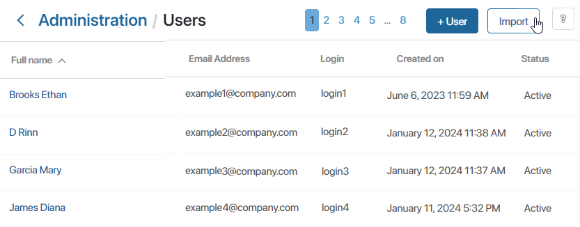
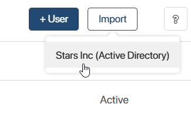
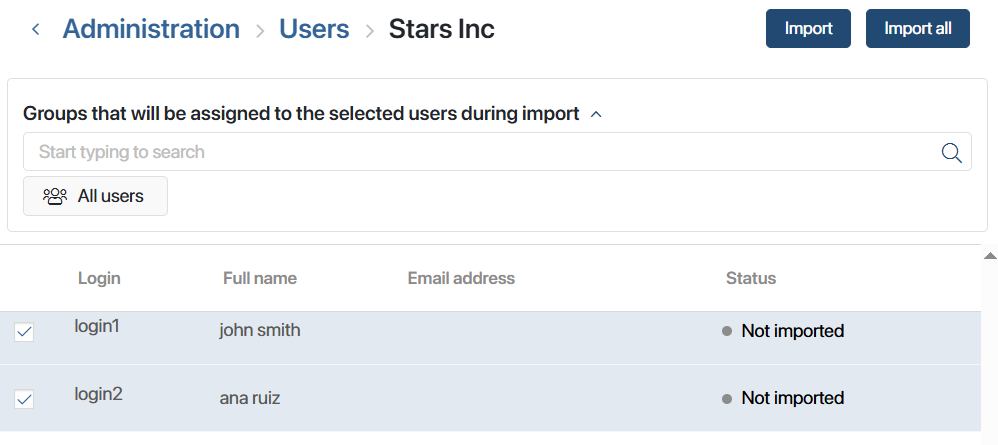
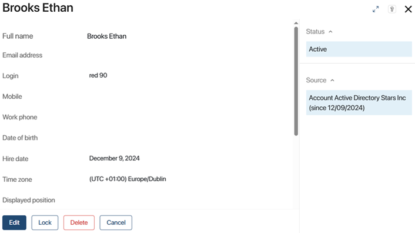

When you set up an integration with AD/LDAP, you can import users from your server into BRIX.
начало внимание
To avoid any unexpected errors, we recommend that you first import users into a test environment or create a backup copy of the system configuration before import.
конец внимание
To import users, follow the next steps:
- Go to Administration > Users and click Import in the top right corner of the page.

- In the drop-down list, select a server from which users will be imported. A list of all users will open. The list contains Login, Full Name, Email, and Status parameters for each user.

начало внимание
It is impossible to import two users with the same email address. An error will occur while importing the second user.
конец внимание
- Specify user groups to which the new users will be added on import.
- Import the users. To import the entire user list, click Import All. If you need to import specific users, select them in the list and click Import.

You can view the latest import operations, find out their status and interrupt the started operation in the AD/LDAP module settings. For more information, see the Work with import and synchronization article.
If a user is imported from AD/LDAP, this information is specified on their page along with the import date.

Imported users can sign in to BRIX using their login and password from AD/LDAP. If authentication via a phone number is enabled in BRIX, they can enter the phone number from their account and receive a one-time authentication code to sign in.
Note: When you initially import users, existing BRIX users invited by email may be updated if their email address is the same in both systems. In this case, the user won’t be able to log in to BRIX using their email and password, but they will be able to do it using the AD/LDAP login data.
Further synchronization of imported users is performed using the ObjectGUID unique identifier for AD or entryID for LDAP. They allow passing all the changes made in AD/LDAP to user accounts in BRIX. For example, that a user is locked, their login is changed, or their personal data is edited.
Also note that if a user previously imported to BRIX isn’t found in the LDAP response during synchronization, their data won’t be updated. This can happen if the user is moved so that the path to users or the import filter don’t include them anymore. It’s also possible that these attributes are changed in the AD module’s settings.
In addition, if you migrated the imported user's data to another AD server, on the user page, change the source of the account integration by specifying the new server.
Found a typo? Select it and press Ctrl+Enter to send us feedback